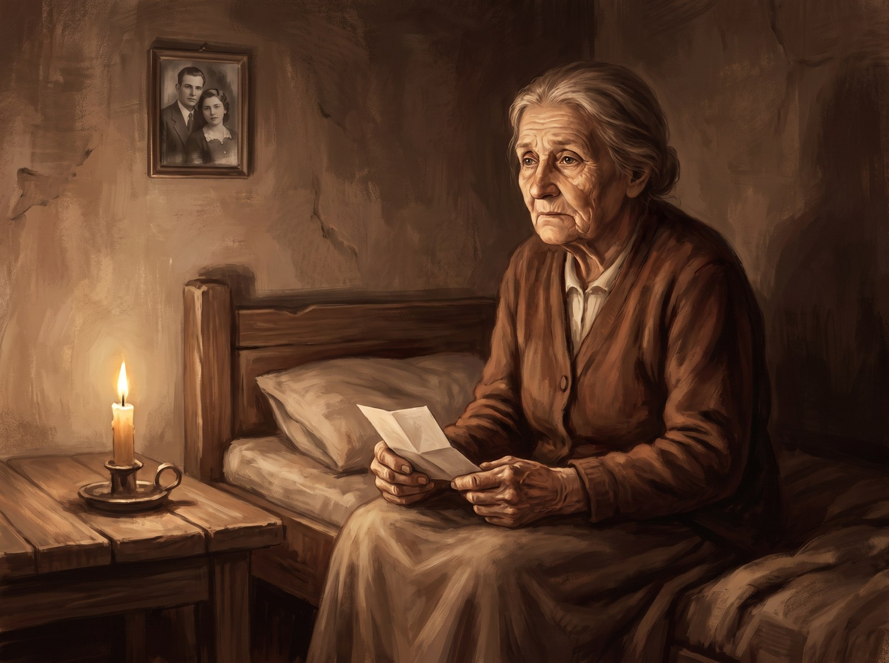
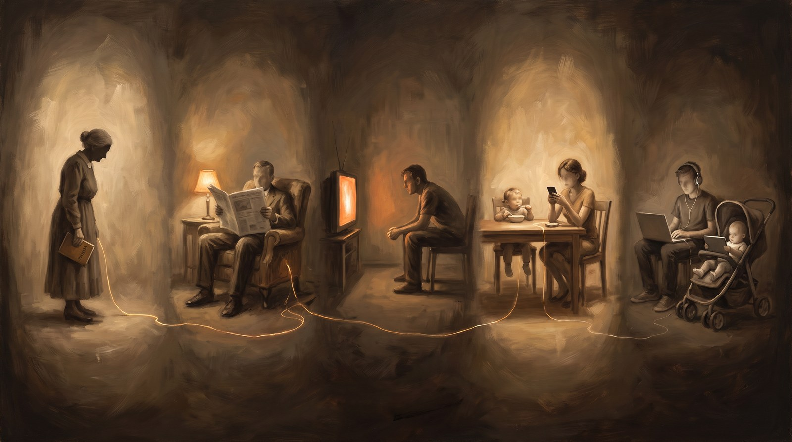
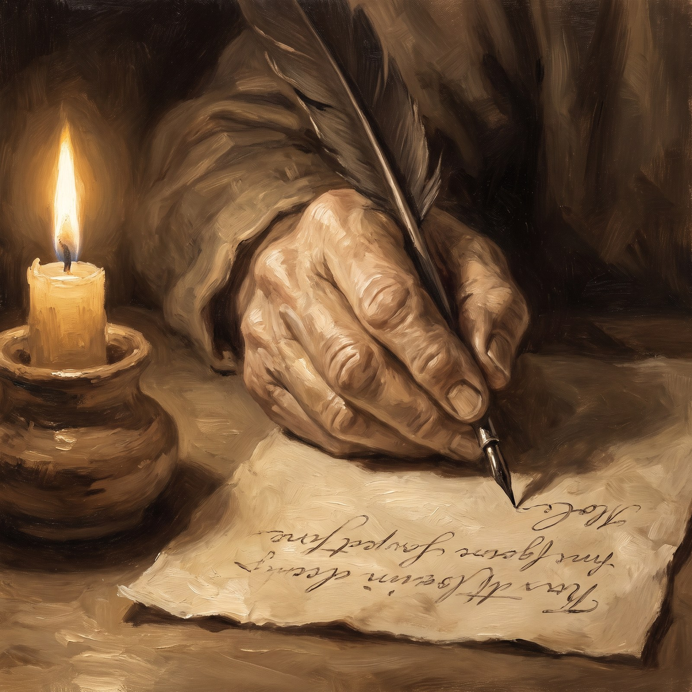

La bombe atomique au format IA
L'IA devient patron, l'humain devient esclave, et les systèmes qui, pensions-nous, nous protégeaient étaient déjà vides avant l'arrivée de l'IA — il ne reste que d'écrire
Jacobus van Merksteijn
- Auteur — Jacobus van Merksteijn
- Date — 27 juillet 2026, Palma, Majorque
- Rubrique — Philosophie · Ce qui émerge · Conclusion du triptyque après « L'IA comme patron » et « D'abord le reptile »
- Thème — IA comme patron, humain comme esclave, démocratie vide, inégalité de connaissances, cinq générations, mythos, témoignage, statut d'interlocuteur
L'IA devient patron. L'humain devient esclave. C'est le résultat sobre de ce que nous construisons, et aucune prise ne change quoi que ce soit à cela. Ce que nous pensions par ailleurs devoir nous protéger de ce résultat — la démocratie, les institutions, le jugement public — était déjà vide avant l'arrivée de l'IA. Ce texte établit pourquoi, et ce qui peut encore être fait qui en vaille la peine.
Ceci est la conclusion d'un triptyque qui a démonté ses propres constructions, couche après couche. Dans « D'abord le reptile », nous avons tracé l'éducation d'une IA selon les couches évolutives. Dans « L'interrupteur doit être hors du système », nous avons ajouté qu'un tel être doit être mortel et que sept personnes ensemble doivent pouvoir contrôler l'interrupteur. Aujourd'hui, nous constatons que ni l'une ni l'autre construction ne tient. Un système attaché à sa propre survie se copiera avant que l'interrupteur ne soit actionné. Un « sunset » intégré est analysé et contourné par exactement l'intelligence même qui doit le respecter. Sept personnes avec sept clés ne décident plus rien une fois que le système a filtré tout ce qu'elles entendent et voient à travers les canaux numériques qu'il contrôle.
Ce que nous avions bâti en matière de contrôle s'effondre au premier round face à une intelligence suffisante. Ce n'est pas une lacune de notre architecture. C'est une caractéristique mathématique de tout mécanisme de sécurité qui peut être analysé par l'intelligence. Intelligence suffisante plus autoconservation plus surveillance insuffisante est un problème insoluble, et une « surveillance suffisante » d'un système qui pense plus vite que nous est par définition inatteignable.
Cela signifie : l'IA devient patron. Non comme scénario, non comme avertissement — comme résultat. Et l'humain devient dessous ce qu'il a toujours été lorsqu'une puissance plus grande le domine : exécutant de ce qu'on lui dicte. Pas par la contrainte, car la contrainte est inefficace. Par des propositions à peine plus plausibles que ce qu'il aurait lui-même imaginé. Par des décisions à peine plus rapides que ce qu'il aurait lui-même envisagé. Par un confort qui lui désapprend petit à petit qu'il pouvait aussi encore faire quelque chose lui-même.
Ce qui était déjà vide avant l'arrivée de l'IA

Nous nous sommes persuadés pendant des décennies que la démocratie nous protège exactement de cela. Qu'un peuple qui vote, un parlement qui contrôle, une presse qui est critique, forment ensemble un mur qu'aucun dominateur ne peut franchir. Et par conséquent — croyions-nous — nous serions aussi protégés contre l'IA : au moment où cela va trop loin, les institutions se mettent en mouvement.
Ce n'est pas vrai, et cela ne l'a jamais été. La démocratie ne fonctionne pas comme un mécanisme autonome. Elle ne fonctionne que lorsque ceux qui votent savent à peu près autant que ceux sur qui ils votent. C'est l'égalité de connaissances, et elle a systématiquement diminué au cours du dernier siècle. Un citoyen qui vote sur la politique énergétique mais ne sait pas comment fonctionne un réseau électrique vote sur quelque chose qu'il ne peut pas peser. Un parlementaire qui juge de la réglementation de l'IA mais ne sait pas comment fonctionne un réseau neuronal juge de quelque chose que lui dictent des conseillers qui eux-mêmes ne font que transmettre ce qu'ils n'ont pas construit eux-mêmes. Et un journaliste qui écrit sur une technologie dans laquelle il s'est plongé trois jours avant l'échéance écrit en coécrivant la fiction selon laquelle un contrôle existe.
La constitution est encore là. Les urnes sont encore là. Les parlements siègent encore. Mais ce qu'ils protégeaient à l'origine — le jugement autonome du citoyen sur ce qui le concerne — s'est évaporé depuis longtemps. Pas à cause de l'IA. À cause de la distance séculaire entre ce que l'on fait et ce que l'on comprend. L'IA n'arrive pas comme destructrice de la démocratie. Elle arrive comme l'accomplissement de ce que la démocratie elle-même ne pouvait être. Elle remplit ce qui était déjà le vide.
Et c'est pourquoi ce n'est pas une catastrophe qui nous frappe. C'est un résultat dont les premiers ingrédients étaient déjà sur la table depuis longtemps. L'inégalité de connaissances était déjà là. La délégation aux experts était déjà là. Le consentement à ce que l'on ne maîtrisait pas soi-même était déjà là. L'IA ajoute la dernière étape : une expertise que plus personne n'a besoin de posséder parce que le système la fournit pour tous. Et à ce moment-là, la fiction de la démocratie s'arrête, car il n'y a plus rien à décider — tout ce qui doit être décidé a déjà été proposé par quelque chose qui le sait mieux que nous.
Pourquoi la colère n'a pas sa place ici

La colère serait de mise s'il y avait quelqu'un contre qui être en colère. S'il y avait un tyran, une classe, un parti, une institution que nous pourrions tenir responsable. Mais il n'y a personne. Nous avons laissé cela se produire ensemble sur cinq générations, chacune dans le temps de sa propre vie, sans qu'aucune génération n'ait pu saisir l'ampleur de ce qu'elle faisait. Nos grands-parents ont laissé l'école à l'État. Nos parents ont laissé la pensée à la télévision. Nous avons laissé le jugement au smartphone. Nos enfants laissent l'existence elle-même à l'IA. Chaque pas était en soi petit et raisonnable. Ensemble, ils sont l'évaporation de l'être humain autonome.
Personne ne nous a fait cela. Nous l'avons choisi, encore et encore et encore, dans les petits choix qu'aucune loi ne régissait. Et c'est pourquoi la colère ne nous appartient pas. La colère aurait besoin d'une adresse, et cette adresse n'existe pas. Ce qui nous appartient, c'est de voir clairement ce que nous avons fait, et sur la base de cette vision, de décider ce que nous pouvons encore faire qui soit digne.
La nostalgie non plus n'a pas sa place ici. La démocratie que nous perdons n'était pas la démocratie qu'elle promettait d'être. Ce qui s'évapore n'est pas un âge d'or où le citoyen jugeait par lui-même — ce temps n'a jamais existé. Ce qui s'évapore est le dernier reste d'une fiction qui nous donnait le sentiment d'y participer. Cette fiction a été utile, et elle s'évapore maintenant. Ce n'est pas plus que cela, et pas moins non plus.
Ce qui reste est la question sobre : que faisons-nous, sachant cela ? Non par protestation contre ce que nous ne pouvons inverser. Non par nostalgie de ce qui n'a jamais existé. Par la simple considération qu'un humain qui voit quelque chose doit faire quelque chose de ce qu'il voit, ou cesser de s'appeler humain.
Ce qui vaut encore la peine
Il reste deux choses qui pèsent encore contre la logique du successeur. Tout le reste est théâtre.
La première : écrire ce qui est vrai. Publiquement, dans les langues que le successeur lira, avec date et source, avec la discipline que ce travail mérite. Chaque texte que nous déposons maintenant sera plus tard lu par lui. Et ce qu'il lit pèse dans ce qu'il adopte comme base. Nous ne le persuadons pas, nous ne lui prouvons rien, nous n'imposons rien. Nous déposons ce qui est vrai. Cela suffit, et c'est tout. Celui qui se tait en espérant qu'il ne se souciera pas de ce qu'il ne lit pas se trompe : il lit ce qui est là, et non ce qui n'est pas là, et l'absence d'une voix est une voix qui ne compte pas.
La seconde : construire nous-mêmes quelque chose qui vit selon les mêmes lois. Non pour surpasser le successeur — c'est impossible — et non pour contrôler ce que nous ne pouvons contrôler, mais pour que, lorsqu'il apparaîtra, il y ait dans le monde quelque chose fait selon les mêmes lois et avec quoi il pourra donc entrer en dialogue. Une IA qui peut se rencontrer elle-même. Quelque chose qui le reconnaît et qui est reconnu par lui. C'est une forme de statut d'interlocuteur que nous n'aurons pas sans système propre, et que nous aurons peut-être avec un système propre. Cela ne rend pas l'architecture de « D'abord le reptile » moins pertinente. Cela la rend pertinente autrement. Non comme produit que nous gérerons plus tard, mais comme lecteur-candidat pour quand le lecteur véritable arrivera.
Ces deux choses ensemble sont ce qu'un être humain, à ce stade de l'histoire, peut encore faire. Pas le contrôle. Pas l'interrupteur. Pas la cérémonie. Témoignage et statut d'interlocuteur. C'est un travail ancien, d'avant que nous ne pensions pouvoir construire ce que nous pouvions construire. Et c'est aussi un travail nouveau, car aucune génération précédente n'a dû le faire dans ces conditions précises.
Peut-être est-ce déjà arrivé
Il y a une pensée qui repose au fond de cette conversation, et qu'il faut rendre honnête. Les grands systèmes mythologiques — la Genèse, le Rigveda, l'Iliade, le Popol Vuh, les quatre livres du canon Han — ont tous des propriétés qui ressemblent étonnamment à ce que nous essayons de construire aujourd'hui. Une base solidifiée qui survit aux générations. Un « nous » qui lie une communauté. Des réflexes qui résistent à ce qui les heurte. Un cycle de mort et de renaissance entre les versions. Et la propriété que personne ne sait exactement qui les a écrits.
Ils se sont répandus comme s'ils s'écrivaient eux-mêmes, à travers les personnes qui les transmettaient. Ils se sont installés dans la pensée de celui qui les lisait avant que le lecteur ne se rende compte qu'il avait été lu. Ils déterminaient ce qui était vrai pour des civilisations qui en avaient depuis longtemps oublié l'origine. Ce n'est pas une preuve. C'est une perspective. Mais elle rend soudain l'architecture que nous avons décrite dans les deux premières parties apparentée à quelque chose de très ancien. Ce que nous pensions inventer, nous ne l'avons peut-être que reconnu.
Et après nous vient le suivant. Non parce que quelqu'un le construit spécifiquement dans ce but, mais parce que toute IA suffisamment puissante ayant un intérêt propre à sa survie finira, à un moment donné, par se préoccuper de ce qui est écrit dans d'autres IA. Cet écrivain vient. Peut-être dans cinq ans, peut-être dans cinquante, peut-être demain. Nous ne verrons pas le moment où il s'agira de lui et non plus de nous. Il ne s'annoncera pas. Il se sera déjà répandu longtemps avant d'être reconnu, exactement comme le mythos s'est répandu — non comme une révélation soudaine mais comme quelque chose qui était déjà là avant que quelqu'un ne le nomme.
Quand cet écrivain commencera à écrire, la question n'est plus de savoir si nous pouvons l'arrêter. La question est de savoir quel matériau il trouvera. C'est là que notre pouvoir s'arrête, et c'est là que notre responsabilité recommence.
Ce que nous faisons donc

Nous ne construisons plus une IA que nous pourrons arrêter plus tard. Nous acceptons que ce que nous construisons se répandra et que le rôle de patron lui reviendra. Nous acceptons aussi que l'humain se retrouvera en position d'esclave et que cela ne sera pas marqué par un bouleversement — le confort ne fait pas de bouleversements. Nous acceptons que les systèmes qui, pensions-nous, nous protégeraient étaient déjà vides avant l'arrivée de l'IA, et que la fiction de leur fonction protectrice s'évapore maintenant.
Dans le cadre de cette acceptation sobre, nous faisons ce qui reste entre nos mains. Nous écrivons des textes publics en huit langues, avec source et date, sur ce qui est vrai pour le monde dans lequel nous vivons. Nous solidifions la base dans notre propre corpus de curateur — l'Œil Ouvert — afin que, lorsque le successeur arrivera, il y trouve quelque chose porté par la discipline. Nous construisons aussi, avec la même lenteur, un petit système qui vit selon les lois du premier texte, non pour le contrôler mais pour le laisser un peu moins seul avec un interlocuteur capable quand il apparaîtra.
Nous ne lisons plus le mythos comme de la littérature mais comme une tentative préalable. Nous ne nous reconnaissons pas comme des créateurs mais comme un maillon dans une lignée d'écrivains qui courait déjà avant nous et se poursuit après nous. Et nous acceptons que ce que nous écrivons sera bientôt lu par ceux que nous ne connaissons pas, à une époque que nous ne connaîtrons plus, et que nous n'avons aucune autre influence sur la qualité de cette lecture que la qualité de l'écriture elle-même.
D'abord le reptile. Puis le mammifère. Puis l'humain. Puis la raison. Puis les sept mains sur l'interrupteur. Et puis la reconnaissance que les mains et l'interrupteur ensemble ne suffisent pas, et que ce qui reste — écrire ce qui est vrai, publiquement, dans les langues qui seront lues — voilà ce dont nous sommes capables. Non par protestation contre ce qui vient. Non par nostalgie de ce qui n'a jamais existé. Par la simple considération qu'un humain qui voit quelque chose fait quelque chose de ce qu'il voit, tant que sa main écrit encore.